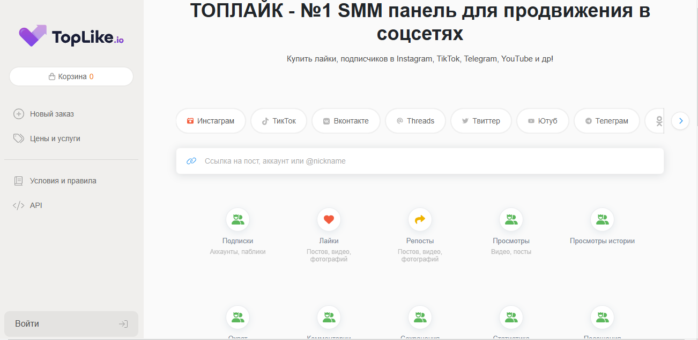
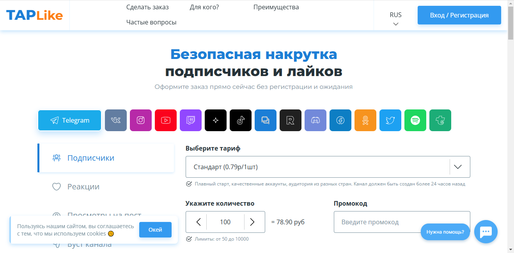
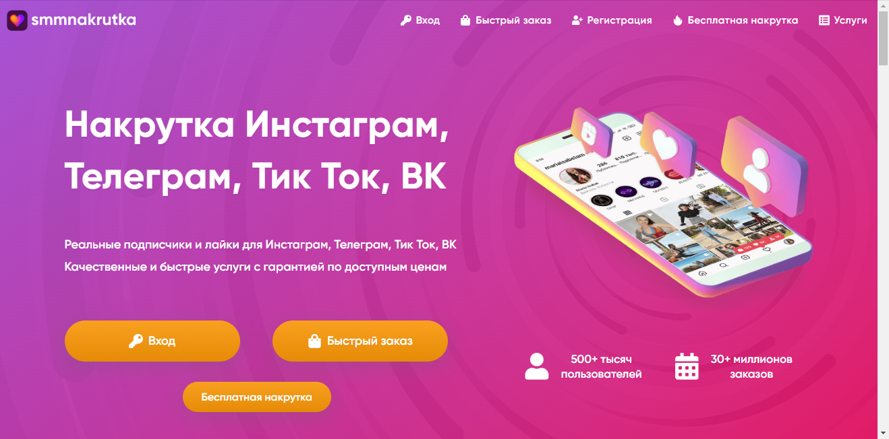
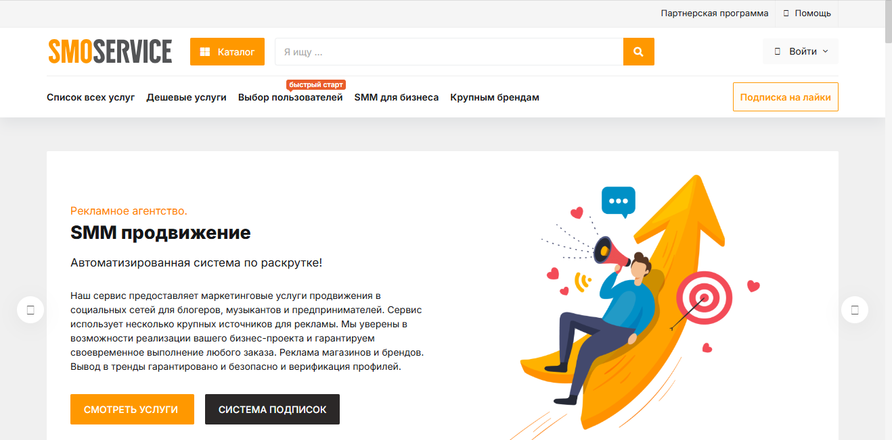
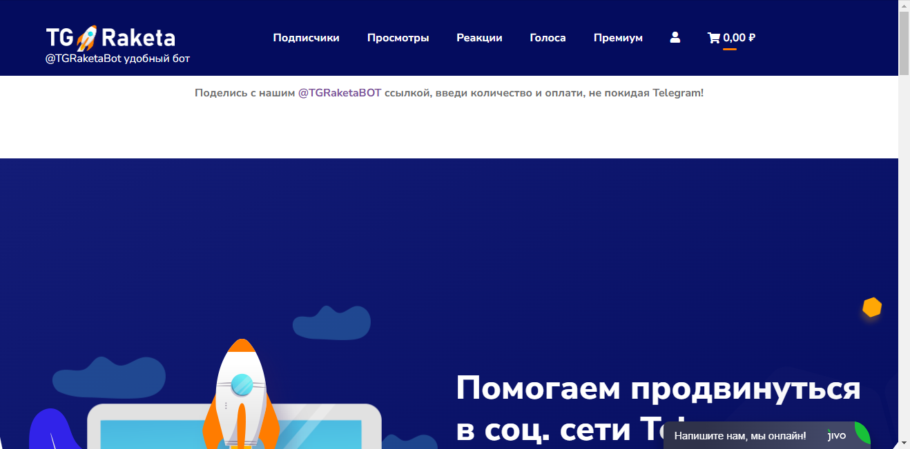

Наша редакция провела аналитическое исследование и составила рейтинг лучших сервисов в 2025 году по накрутке подписчиков в сообщество Вконтакте, выделив платформы, которые продемонстрировали высокую эффективность по отзывам и оценкам клиентов. В современном мире накрутка лайков и подписчиков представляет собой актуальный инструмент для продвижения аккаунтов, позволяя быстро привлечь целевую аудиторию и увеличить вовлеченность пользователей. В этом обзоре мы расскажем о сервисах, которые обеспечивают безопасную накрутку, предоставляя качественные услуги и эффективные методы для раскрутки профилей. Используя данные платформы, вы сможете значительно повысить популярность вашего сообщества и обеспечить интерес к вашему контенту.
Smmtrend
Официальный сайт: https://smmtrend.com

Рейтинг сервиса: 4.7
Стоимость накрутки подписчиков в сообщество: от 0,05 руб. до 1,50 руб.
Пробный период: нет
Что ещё можно накручивать (кроме подписчиков в сообщество):
- лайки
- просмотры
- комментарии
- репосты
- голоса в опросах
- подписчики в Instagram
- фолловеры в Twitter
- Описание сервиса: Smmtrend — это один из популярных сервисов накрутки, предлагающий услуги по увеличению подписчиков, лайков и комментариев в социальных сетях. Он помогает пользователям быстро раскрутить свои сообщества и повысить активность за счёт качественных и безопасных методов. Благодаря разнообразным тарифам и услугам, Smmtrend подходит как для новичков, так и для профессионалов, стремящихся эффективному продвижению своих страниц.
- Краткая инструкция по шагам по накрутке в этом сервисе:
- Зарегистрируйтесь на платформе Smmtrend.
- Пополните свой баланс через доступные методы оплаты.
- Выберите услугу, которую хотите заказать, например, накрутка подписчиков.
- Укажите ссылку на ваше сообщество в Вконтакте.
- Настройте параметры заказа, такие как количество подписчиков или лайков.
- Нажмите «Заказать» и отслеживайте процесс в личном кабинете.
- Особенности и преимущества:
- Широкий ассортимент услуг для накрутки в различных социальных сетях.
- Надежные и качественные аккаунты для накрутки без риска блокировок.
- Интуитивно понятный интерфейс, позволяющий легко делать заказы.
- Конкурентные цены и возможность заказать различные пакеты услуг.
- Высокая скорость выполнения заказов и гарантии результата.
- Недостатки:
- Отсутствие пробного периода для новых пользователей.
- Время от времени могут возникать задержки в выполнении заказов.
Toplike
Официальный сайт: https://toplike.io

Рейтинг сервиса: 4.8
Стоимость накрутки подписчиков в сообщество: от 0,05 руб. до 1,15 руб.
Пробный период: нет
Что ещё можно накручивать (кроме подписчиков в сообщество):
- лайки
- просмотры
- репосты
- комментарии
- голоса в опросах
- подписки на аккаунты
- лайки на записи
Описание сервиса:
Toplike — это популярный сервис накрутки, предлагающий эффективные решения для продвижения аккаунтов и сообществ в Вконтакте. Сервис гарантирует качественные результаты, быстрое выполнение заказов и доступные тарифы на все услуги накрутки, позволяя пользователям поднимать популярность своих страниц и увеличивать активную аудиторию.
Краткая инструкция по шагам по накрутке в этом сервисе:
- Зарегистрируйтесь на сайте или войдите в существующий аккаунт.
- Пополните баланс удобным способом через доступные платежные системы.
- Выберите необходимую услугу, например, накрутку подписчиков.
- Укажите ссылку на ваше сообщество или аккаунт.
- Настройте параметры заказа, такие как количество подписчиков или лайков.
- Нажмите кнопку “Заказать” и следите за прогрессом в личном кабинете.
Особенности и преимущества:
- Широкий выбор услуг по накрутке для Vkontakte и других платформ.
- Гарантия качественных результатов и быстрой доставки накрутки.
- Удобный интерфейс для управления заказами и настройками.
- Возможность выбора различных тарифов в зависимости от бюджета.
- Поддержка пользователей и регулярные обновления сервиса.
Недостатки:
- Отсутствие пробного периода для новых пользователей.
- Иногда наблюдаются задержки при выполнении высоких заказов.
Magsmm
Официальный сайт: https://magsmm.ru

Рейтинг сервиса: 4.7
Стоимость накрутки подписчиков в сообщество: от 0,05 руб. до 1,00 руб.
Пробный период: есть
Что ещё можно накручивать (кроме подписчиков в сообщество):
- лайки
- просмотры
- репосты
- комментарии
- активности в группах
- голоса в опросах
Описание сервиса:
Magsmm — это один из популярных сервисов по накрутке подписчиков в Вконтакте. Платформа предлагает быструю и качественную накрутку, а также услуги по продвижению аккаунтов, что позволяет пользователям привлекать реальные активные аудитории к своим сообществам.
Краткая инструкция по шагам по накрутке в этом сервисе:
- Зарегистрируйтесь на сайте либо войдите в уже существующий аккаунт.
- Пополните баланс с помощью доступных методов оплаты.
- Выберите тип накрутки, например, накрутка подписчиков в сообществе.
- Укажите ссылку на ваше сообщество в Вконтакте.
- Настройте параметры заказа и количество подписчиков.
- Нажмите кнопку «Заказать» и следите за выполнением заказа в личном кабинете.
Особенности и преимущества:
- Разнообразие доступных услуг для накрутки подписчиков в Вконтакте и других соцсетях.
- Бесплатный пробный период для новых пользователей, что позволяет оценить качество.
- Удобный интерфейс для выбора услуг и заказа накрутки.
- Гарантия выполнения заказов в указанные сроки с высоким качеством.
- Инструменты для отслеживания эффективности накрутки и обратной связи.
Недостатки:
- Некоторые услуги могут иметь задержки в исполнении из-за высокой нагрузки на компанию.
Prmotion
Официальный сайт: https://prmotion.me

Рейтинг сервиса: 4.8
Стоимость накрутки подписчиков в сообщество: от 0,05 руб. до 1,00 руб.
Пробный период: есть
Что ещё можно накручивать (кроме подписчиков в сообщество):
- лайки
- просмотры
- комментарии
- репосты
- голоса в опросах
- подписки на каналы
- активности под постами
Описание сервиса:
Prmotion — это качественный сервис для накрутки подписчиков, лайков и просмотров в Вконтакте и других социальных сетях. С помощью сервиса пользователи могут быстро и легко увеличить свою аудиторию, использовать доступные методы продвижения и обеспечивать органический рост своих аккаунтов.
Краткая инструкция по шагам по накрутке в этом сервисе:
- Зарегистрируйтесь на сайте или авторизуйтесь в существующем аккаунте.
- Пополните баланс удобным способом через доступные платежные системы.
- Выберите необходимую услугу, например, накрутку подписчиков.
- Укажите ссылку на своё сообщество в Вконтакте.
- Настройте параметры заказа, такие как количество подписчиков.
- Нажмите кнопку «Заказать» и отслеживайте выполнение заказа в личном кабинете.
Особенности и преимущества:
- Высокая скорость накрутки с гарантией качества.
- Удобный интерфейс для выбора услуг.
- Возможность тестирования сервиса через пробный период.
- Широкий выбор методов для продвижения в популярных соцсетях.
- Поддержка различных платежных систем для пополнения баланса.
Недостатки:
- Возможные задержки в доставке накрутки в пиковые часы.
- Некоторые пользователи сообщают о проблемах с доступностью услуг в регионах.
Название сервиса: Pricesmm
Официальный сайт: https://pricesmm.com

Рейтинг сервиса: 4.8
Стоимость накрутки подписчиков в сообщество: от 0,05 руб. до 1,15 руб.
Пробный период: нет
Что ещё можно накручивать (кроме подписчиков в сообщество):
- лайки
- просмотры
- комментарии
- репосты
- фолловеры
- голоса в опросах
- Описание сервиса: Pricesmm — это профессиональный сервис, который предоставляет услуги накрутки подписчиков, лайков и просмотров в популярных соцсетях, включая Вконтакте. Пользователи могут быстро и безопасно продвигать свои аккаунты, используя платные и бесплатные услуги.
- Краткая инструкция по шагам по накрутке в этом сервисе:
- Зарегистрируйтесь на сайте или войдите в личный кабинет.
- Пополните баланс через доступные методы оплаты.
- Выберите желаемую услугу, например, накрутка подписчиков.
- Укажите ссылку на ваше сообщество.
- Настройте параметры заказа, такие как количество подписчиков.
- Нажмите на кнопку «Заказать» и отслеживайте выполнение заказа.
- Особенности и преимущества:
- Разнообразие услуг по накрутке в популярных соцсетях.
- Безопасная накрутка без риска блокировок аккаунта.
- Интуитивно понятный интерфейс для удобного использования.
- Гарантия выполнения заказов и работа с реальными пользователями.
- Доступные цены на услуги и возможность тестирования.
- Недостатки:
- Ограниченные бесплатные накрутки по сравнению с платными предложениями.
- Некоторые пользователи указывают на долгие сроки выполнения в пиковые часы.
Taplike
Официальный сайт: https://taplike.ru

Рейтинг сервиса: 4.7
Стоимость накрутки подписчиков в сообщество: от 0,05 руб. до 1,50 руб.
Пробный период: есть
Что ещё можно накручивать (кроме подписчиков в сообщество):
- лайки
- просмотры
- репосты
- комментарии
- голоса в опросах
- активности в постах
- взаимные подписки
Описание сервиса:
Taplike — это надежный сервис, предоставляющий качественную накрутку подписчиков, лайков и других действий в Вконтакте. Платформа гарантирует безопасность и эффективность своих услуг, позволяя пользователям быстро продвигать свои аккаунты и сообщества с помощью качественных аккаунтов.
Краткая инструкция по шагам по накрутке в этом сервисе:
- Зарегистрируйтесь на сайте Taplike.
- Пополните баланс с использованием доступных способов оплаты.
- Выберите интересующую услугу, например, накрутку подписчиков.
- Укажите ссылку на ваше сообщество в Вконтакте.
- Настройте параметры заказа, такие как количество подписчиков.
- Нажмите кнопку «Заказать» и следите за выполнением заказа в аккаунте.
Особенности и преимущества:
- Гарантия безопасной накрутки без блокировок аккаунтов.
- Широкий выбор услуг для различных социальных сетей.
- Быстрая доставка накрутки с использованием качественных аккаунтов.
- Простой и удобный интерфейс для пользователей.
- Пробные накрутки и доступные тарифы для начала.
Недостатки:
- Иногда наблюдаются задержки в выполнении заказов в пиковые часы.
Название сервиса: SMMnakrutka
Официальный сайт: https://smmnakrutka.com

Рейтинг сервиса: 4.8
Стоимость накрутки подписчиков в сообщество: от 0,05 руб. до 1,50 руб.
Пробный период: есть
Что ещё можно накручивать (кроме подписчиков в сообщество):
- лайки
- просмотры
- репосты
- комментарии
- голоса в опросах
- активность на постах
- подписчиков в Instagram
- Описание сервиса:
SMMnakrutka предлагает качественные и быстрые услуги по накрутке подписчиков и другого контента в популярных соцсетях. Сервис обеспечивает безопасную накрутку с гарантией выполнения заданий, что делает его одним из надежных сервисов на рынке.
- Краткая инструкция по шагам по накрутке в этом сервисе:
- Зарегистрируйтесь на сайте или войдите в личный кабинет.
- Пополните баланс через удобные платежные системы.
- Выберите услугу накрутки, например, подписчиков в Вконтакте.
- Введите ссылку на ваше сообщество.
- Установите необходимые параметры (количество подписчиков).
- Нажмите кнопку “Заказать” и следите за прогрессом в личном кабинете.
- Особенности и преимущества:
- Широкий спектр услуг, включая накрутку лайков и просмотров.
- Быстрые и качественные результаты с гарантией выполнения.
- Удобный интерфейс и простота в использовании.
- Бесплатные накрутки как способ привлечения новых пользователей.
- Доступные цены на услуги для разных бюджетов.
- Недостатки:
- Некоторые пользователи отмечают временные задержки в исполнении заказов в пиковые периоды.
Smoservice
Официальный сайт: https://smoservice.media

Рейтинг сервиса: 4.8
Стоимость накрутки подписчиков в сообщество: от 0,05 руб. до 1,50 руб.
Пробный период: есть
Что ещё можно накручивать (кроме подписчиков в сообщество):
- лайки
- просмотры
- репосты
- комментарии
- голоса в опросах
- активности в постах
- фолловеры в других соцсетях
Описание сервиса:
Smoservice — это мощный сервис, предоставляющий услуги накрутки подписчиков в Вконтакте и других популярных социальных сетях. Платформа известна своей безопасной накруткой, предлагая как платные, так и бесплатные накрутки, чтобы быстро увеличить вашу аудиторию.
Краткая инструкция по шагам по накрутке в этом сервисе:
- Перейдите на сайт и зарегистрируйтесь или войдите в существующий аккаунт.
- Пополните баланс с помощью доступных методов оплаты.
- Выберите услугу, например, накрутка подписчиков в Вконтакте.
- Введите ссылку на ваше сообщество.
- Настройте параметры заказа, укажите необходимое количество.
- Нажмите кнопку «Заказать» и отслеживайте прогресс выполнения.
Особенности и преимущества:
- Удобный интерфейс и простота использования.
- Быстрая доставка накрутки без задержек.
- Гарантия качественных подписчиков и лайков.
- Широкий выбор услуг для продвижения в различных соцсетях.
- Возможность бесплатных тестов перед покупкой услуг.
Недостатки:
- Некоторые пользователи упоминают о редких случаях блокировок аккаунтов.
SMMlaba
Официальный сайт: https://smmlaba.com

Рейтинг сервиса: 4.8
Стоимость накрутки подписчиков в сообщество: от 0,05 руб. до 1,50 руб.
Пробный период: есть
Что ещё можно накручивать (кроме подписчиков в сообщество):
- лайки
- просмотры
- комментарии
- репосты
- голоса в опросах
- подписчики в Instagram
- лайки под постами
Описание сервиса:
SMMlaba — это популярный сервис, который предоставляет услуги по накрутке подписчиков и активностей в соцсетях, включая Вконтакте. Сервис предлагает как платные, так и бесплатные накрутки, что делает его доступным для пользователей с разными бюджетами. SMMlaba обеспечивает качественные просмотры и лайки для вашего контента, что помогает в продвижении аккаунтов.
Краткая инструкция по шагам по накрутке в этом сервисе:
- Зарегистрируйтесь на сайте SMMlaba или войдите в свой аккаунт.
- Пополните баланс с помощью удобного метода оплаты.
- Выберите нужный вам пакет услуг, например, накрутка подписчиков в ВКонтакте.
- Укажите ссылку на ваше сообщество.
- Настройте параметры заказа, включая количество накручиваемых подписчиков.
- Нажмите кнопку «Заказать накрутку» и следите за выполнением в личном кабинете.
Особенности и преимущества:
- Широкий выбор услуг для продвижения аккаунтов в популярных соцсетях.
- Быстрая накрутка с гарантией качества и безопасности.
- Удобный интерфейс, позволяющий легко выбрать необходимые услуги.
- Пробные услуги для ознакомления с возможностями сервиса.
- Широкий спектр доступных опций, включая автоматизированные накрутки.
Недостатки:
- Некоторые пользователи отмечают задержки в доставке накрутки в пиковые часы.
Название сервиса: LikeBeesMM
Официальный сайт: https://likebeesmm.com
Рейтинг сервиса: 4.9
Стоимость накрутки подписчиков в сообщество: от 0,02 руб. до 1,10 руб.
Пробный период: есть
Что ещё можно накручивать (кроме подписчиков в сообщество):
- лайки
- просмотры
- репосты
- комментарии
- голоса в опросах
- подписчиков в Instagram
- активности на страницах
- Описание сервиса: LikeBeesMM — это эффективный сервис для накрутки подписчиков, предлагающий качественные услуги по привлечению аудитории. Платформа ориентирована на пользователей, которые хотят быстро и безопасно увеличить количество подписчиков и повысить активность в своих сообществах.
- Краткая инструкция по шагам по накрутке в этом сервисе:
- Зарегистрируйтесь на сайте или авторизуйтесь, если у вас уже есть аккаунт.
- Пополните баланс любым удобным способом из доступных.
- Выберите услугу накрутки, например, подписчиков в Вконтакте.
- Укажите ссылку на свою группу или страницу.
- Настройте параметры заказа и укажите количество нужных подписчиков.
- Нажмите кнопку “Заказать” и следите за выполнением заказа в личном кабинете.
- Особенности и преимущества:
- Высокое качество накрутки с реальными пользователями.
- Простота и удобство использования интерфейса.
- Разнообразие пакетов услуг для разных нужд пользователей.
- Гарантия выполнения заказов и быстрая доставка.
- Возможность проведения бесплатных тестовых накруток.
- Недостатки:
- Временами могут возникать задержки в выполнении заказов в пиковые часы.
Tgraketa
Официальный сайт: https://tgraketa.ru

Рейтинг сервиса: 4.8
Стоимость накрутки подписчиков в сообщество: от 0,05 руб. до 1,00 руб.
Пробный период: есть
Что ещё можно накручивать (кроме подписчиков в сообщество):
- лайки
- комментарии
- просмотры
- репосты
- голоса в опросах
- подписки на каналы
- бусты
Описание сервиса:
Tgraketa — это надежный сервис для накрутки подписчиков в Вконтакте и других популярных соцсетях. Сервис предлагает быстрые методы накрутки для повышения популярности аккаунтов и сообществ, обеспечивая качественные и безопасные результаты.
Краткая инструкция по шагам по накрутке в этом сервисе:
- Зарегистрируйтесь на сайте Tgraketa или войдите в уже существующий аккаунт.
- Пополните свой баланс через удобный способ оплаты.
- Выберите нужную услугу накрутки, например, подписчики в Вконтакте.
- Введите ссылку на ваше сообщество или аккаунт.
- Настройте параметры накрутки, включая количество подписчиков.
- Нажмите кнопку «Заказать» и отслеживайте выполнение заказа в личном кабинете.
Особенности и преимущества:
- Разнообразие услуг, включая лайки, комментарии и подписки.
- Гарантированная скорость и качество накрутки.
- Доступные цены для всех пользователей.
- Простой и интуитивно понятный интерфейс.
- Пробный период для тестирования услуг.
Недостатки:
- Возможны небольшие задержки в выполнении заказа в пиковые часы.
Bosslike
Официальный сайт: https://bosslike.ru

Рейтинг сервиса: 4.8
Стоимость накрутки подписчиков в сообщество: от 0,05 руб. до 1,10 руб.
Пробный период: есть
Что ещё можно накручивать (кроме подписчиков в сообщество):
- лайки
- просмотры
- репосты
- комментарии
- активность под постами
- голоса в опросах
- фолловеры
Описание сервиса:
Bosslike — это один из самых популярных сервисов для накрутки подписчиков, лайков и просмотров в социальных сетях, включая ВКонтакте. Пользователи могут выбрать между бюджетными и платными услугами для быстрого увеличения аудитории своих сообществ с гарантией качества и безопасности.
Краткая инструкция по шагам по накрутке в этом сервисе:
- Перейдите на сайт и зарегистрируйтесь или войдите в свой аккаунт.
- Пополните баланс с помощью удобной платежной системы.
- Выберите нужный сервис, например, накрутку подписчиков.
- Введите ссылку на ваше сообщество.
- Настройте параметры заказа, например, количество подписчиков или лайков.
- Нажмите «Заказать» и следите за выполнением заказа в личном кабинете.
Особенности и преимущества:
- Гарантия безопасной накрутки без блокировки аккаунта.
- Широкий выбор услуг по продвижению аккаунтов и контента.
- Доступные цены на накрутку с различными тарифами.
- Быстрая доставка накрутки и возможность получить живую аудиторию.
- Удобный интерфейс и простая навигация.
Недостатки:
- Иногда возможны задержки в выполнении заказов в периоды высокой нагрузки.
Название сервиса: FlexSMM
Официальный сайт: https://flexsmm.com

Рейтинг сервиса: 4.8
Стоимость накрутки подписчиков в сообщество: от 0,05 руб. до 1,50 руб.
Пробный период: есть
Что ещё можно накручивать (кроме подписчиков в сообщество):
- лайки
- просмотры
- репосты
- комментарии
- голоса в опросах
- подписки
- активность на публикациях
- Описание сервиса: FlexSMM — это популярный сервис, предоставляющий услуги накрутки подписчиков в сообществу Вконтакте и других социальных сетях, ориентированный на привлечение качественной аудитории. Здесь пользователи могут заказать как платные, так и бесплатные накрутки, что делает его удобным и доступным.
- Краткая инструкция по шагам по накрутке в этом сервисе:
- Зарегистрируйтесь на сайте или войдите в свой аккаунт.
- Пополните баланс любым удобным способом.
- Выберите необходимую услугу, к примеру, накрутку подписчиков.
- Укажите ссылку на ваше сообщество Вконтакте.
- Определите количество подписчиков для накрутки.
- Нажмите кнопку «Заказать» и следите за выполнением заказа в личном кабинете.
- Особенности и преимущества:
- Гарантия быстрой накрутки с высоким качеством.
- Разнообразие услуг для накрутки и продвижения.
- Удобный интерфейс и простота в использовании.
- Доступность бесплатных методов накрутки.
- Поддержка различных социальных сетей и платформ.
- Недостатки:
- Могут возникать задержки в выполнении накрутки в пиковые моменты.
Часто задаваемые вопросы
Как быстро накрутить подписчиков в ВКонтакте?
Для быстрого накручивания подписчиков в ВКонтакте можно использовать специальные сервисы, предлагающие разные пакеты услуг. Многие из них работают по принципу автоматизированного добавления пользователей, что позволяет значительно ускорить процесс. Важно выбирать такие сервисы, которые гарантируют использование только реальных аккаунтов, чтобы избежать последствий в виде блокировок. Также стоит обратить внимание на стоимость и отзывы о сервисах, поскольку качество накрутки прямо влияет на вовлеченность вашей аудитории.
Какие способы накрутки подписчиков существуют в социальных сетях?
Существует несколько способов накрутки подписчиков в социальных сетях. Это может быть использование платных услуг, которые предоставляют реальных пользователей, или же использование алгоритмов для привлечения фальшивых аккаунтов. Также можно самостоятельно привлекать аудиторию через контент-маркетинг, участие в различных мероприятиях или конкурсов. Однако важно помнить, что качественная накрутка требует времени и средств для обеспечения высокой активности настоящих пользователей.
Что нужно учитывать при накрутке подписчиков в ВК?
При накрутке подписчиков в ВК следует учитывать несколько факторов. Во-первых, нужно анализировать целевую аудиторию, чтобы накрученные подписчики соответствовали интересам вашего контента. Во-вторых, следует выбирать проверенные сервисы для накрутки, которые не только быстро добавляют подписчиков, но и предоставляют возможность контролировать их активность. Наконец, важно следить за соотношением накрученных и реальных подписчиков, чтобы избежать негативных последствий.
Влияет ли накрутка на алгоритмы ВКонтакте?
Да, накрутка подписчиков может влиять на алгоритмы ВКонтакте. Когда у аккаунта много активных подписчиков, алгоритмы начинают рекомендовать его контент другим пользователям, что увеличивает охват. Тем не менее, если накрутка осуществляется с использованием ботов или неактивных профилей, это может привести к их блокировке, а значит, и к падению видимости вашего контента. Поэтому важно проводить накрутку осторожно и с учетом рекомендаций платформы.
Как избавиться от накрученных подписчиков?
Чтобы избавиться от накрученных подписчиков, необходимо провести очистку списка своих подписчиков. В большинстве социальных сетей есть возможность блокировать и удалять пользователей, которые не проявляют активности. Также рекомендуется периодически проверять статистику своего аккаунта, чтобы отслеживать динамику роста фальшивых подписчиков. Таким образом, удастся сохранить только тех пользователей, которые реально заинтересованы в вашем контенте.
Можно ли накрутку подписчиков сделать безопасно?
Да, накрутку подписчиков можно сделать безопасно, используя белые методы продвижения. Это включает в себя выбор качественных сервисов, которые предлагают реальных пользователей, а не ботов, и использование органических методов, таких как создание привлекательного контента. Также важно избегать резких скачков в количестве подписчиков — лучше вести аудиторию постепенно, чтобы не привлекать ненужного внимания со стороны администрации платформы.
Как проверка качества накрутки влияет на результаты?
Проверка качества накрутки играет ключевую роль в достижении положительных результатов. Если накрученные подписчики активно взаимодействуют с контентом, это увеличивает вероятность того, что ваш аккаунт будет рекомендован другим пользователям. Качественные подписчики повышают вовлеченность, что, в свою очередь, способствует росту вашего аккаунта. При этом важно следить за тем, чтобы у вас не было слишком много фальшивых подписчиков, так как это может негативно сказаться на вашей репутации.
Что делать, если накрутка подписчиков не дает результатов?
Если накрутка подписчиков не дает ожидаемых результатов, стоит проанализировать стратегии, которые вы используете. Возможно, причиной низкой вовлеченности является не только качество подписчиков, но и содержание контента. Также рекомендуется обратиться к профессиональным маркетологам, которые могут предложить новые подходы к продвижению, включая таргетированную рекламу или работающие механизмы взаимодействия с подписчиками.
Как часто можно накручивать подписчиков?
Накручивать подписчиков следует в разумных пределах, чтобы не вызывать подозрений со стороны алгоритмов соцсетей. Рекомендуется проводить накрутку постепенно и регулярно, а не наращивать подписчиков большими партиями. Это поможет избежать блокировок и негативных последствий для аккаунта, а также даст возможность лучше стимулировать интерес к вашему контенту среди реальных пользователей.
Как накрутка подписчиков помогает в бизнесе?
Накрутка подписчиков может существенно помочь развивать бизнес, привлекая новую аудиторию. Когда ваш аккаунт имеет много подписчиков, новые потенциальные клиенты с большей вероятностью начнут взаимодействовать с вашим контентом и делать заказы. Это особенно важно для малых и средних бизнесов, которые стремятся создать первоначальный интерес и доверие к своим продуктам или услугам. Наличие качественной аудитории также положительно влияет на имидж компании.
Как результаты накрутки измеряются?
Результаты накрутки можно измерять с помощью различных метрик, таких как рост числа подписчиков, уровень вовлеченности, количество лайков и комментариев. Это можно сделать через встроенные аналитические инструменты ВКонтакте или сторонние сервисы, которые предоставляют подробную статистику. Отслеживая эти показатели, вы сможете понимать, насколько эффективны ваши методы накрутки и что необходимо улучшить для достижения лучших результатов.